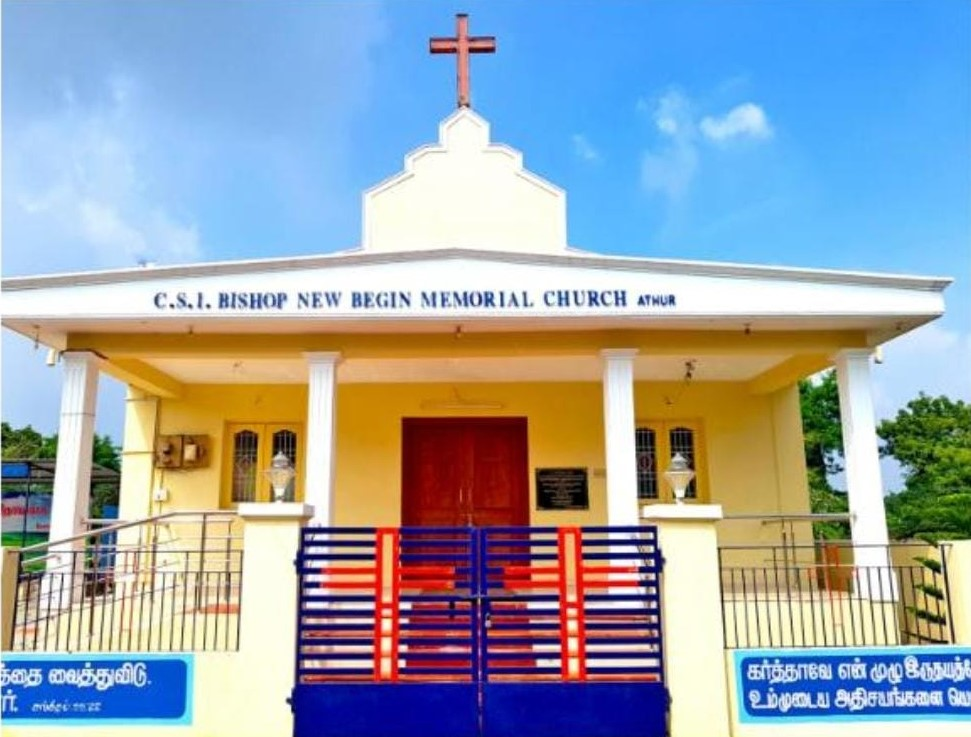
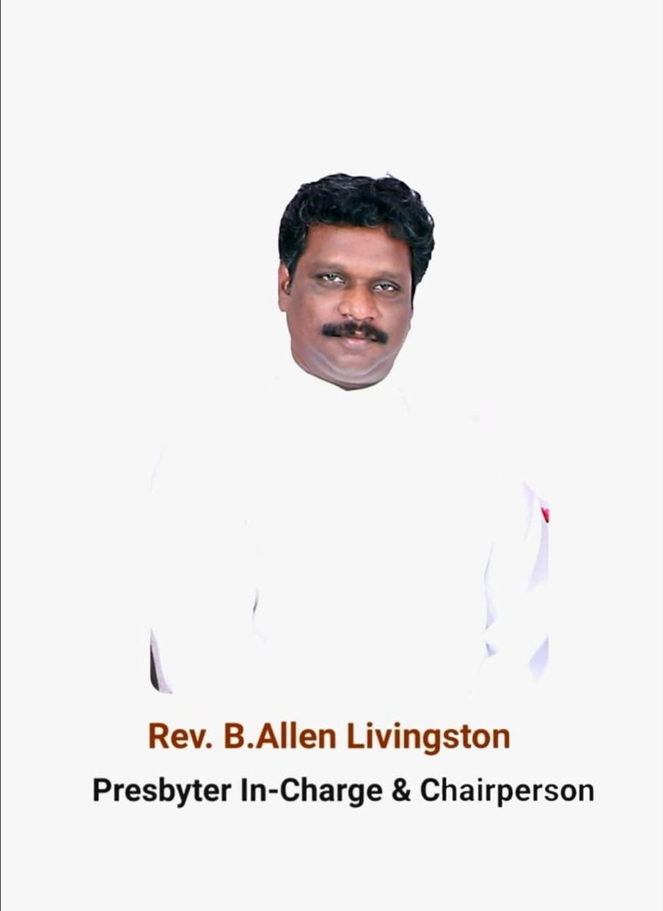
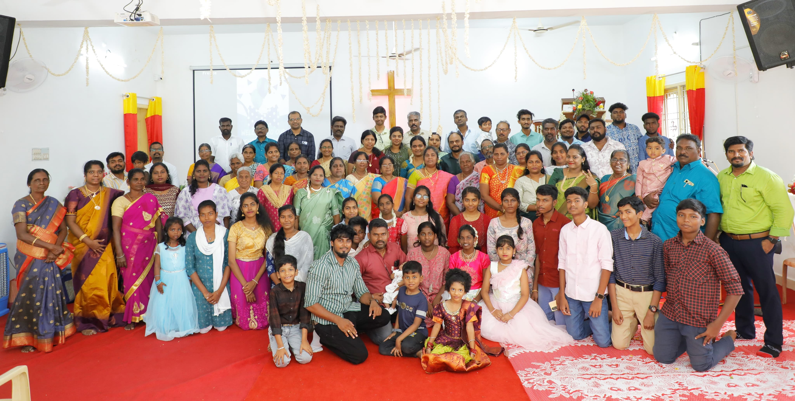

One hundred years of St.Andrew's Church, Chengalpattu 1893-1993 September 2018 marked the 125th year of the St.Andrew's Church, Chengalpattu. The history of St.Andrew's Church was originally written in 1993 for the centenary celebration. It was titled: "One hundred Years Of St.Andrew's Church, Chengalpattu 1893-1993". For us this was a decisive occasion with unexpected results. The Six page article kindled the interest of several other congregations, who wanted details of their sacred history to be researched and written for their jubilee celebrations.

Rev B.Allen Livingston is the presbyter at CSI St.Andrews Church in Chengalpattu, Tamil Nadu. He is actively involved in leading worship services and special devotionals, often featured on platforms like Grace TV and YouTube St.Andrew's Churchhas a rich history dating back to its dedication in 1893 and continues to serve a vibrant Christian communitity in the region.
